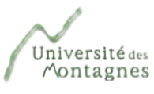

<mat-toolbar class="navbar-inverse">
    <span>
        
    </span>
    <span class="navbar-brand">Concours d'entrée a l'udm</span>
    <span class="example-spacer"></span>
  
    <div >
        <ul class="nav">
            <li class="active"><a [routerLink]="['/acceuil']">Accueil</a></li>
            <li class="active"><a href="http://www.udm.aed-cm.org/">Site web de l'UdM</a></li>
            <li class="active"><a href="help.html">Aide</a></li>
            <li class="active"><a href="contact.html">Contact</a></li>
        </ul> 
    </div>
  
  </mat-toolbar>